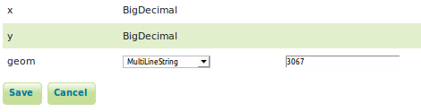

8 EXERCISE 1.7: SPATIAL DATABASES
Content of the exercise
The exercise involves adding data to GeoServer from a database source.
Aim of the exercise
After the exercise, the student will be able to connect geodatabase data to GeoServer and publish their data there.
Estimated duration
30 minutes.
8.1 Preparation
Start a web browser on your computer and log in for your practice session.
The PostgreSQL database and its PostGIS extension are installed on the server machine. The database is pre-loaded with a variety of vector data.
8.2 Connecting to the geodatabase
GeoServer supports most spatial databases, including PostGIS, ArcSDE, Oracle and Microsoft SQL Server.
PostGIS spatial databases can be automatically accessed through GeoServer’s default settings. Support for other databases is installed via plugins.
A PostGIS database is pre-installed in the training environment, with a variety of vector datasets ready for use. The data are from Helsinki Region Infoshare, University of Jyväskylä open data services and OpenStreetMap map data (from geofabrik.de).
As with other datasets, in order to use them in GeoServer, they must be referenced by creating an appropriate store.
Create a new store (Data → Stores → Add new Store).
Select the format PostGIS - PostGIS Database: 
Select the helsinki workspace as Workspace and name it hki_lipas (Data Source Name).
Then fill in the Connection Parameters of the PostGIS database as follows:
Dbtype |
postgis |
Host |
localhost |
Port |
5432 |
Database |
gs_training |
Schema |
lipas |
User |
postgres |
Passwd |
gispo |
Leave the rest of the settings as defaults and press Save. 
In the same way as before, the new layer creation view will appear automatically after creating a store. This view lists all the layers that can be found in that database.
The data is now referenced via the hki_lipas store and you can see what data it contains: 
8.3 Adding a PostGIS layer
You can publish a layer immediately after creating a store by pressing Publish. Now publish the pisteet (points) layer. Lipas is a national geographic information system for physical education managed by the University of Jyväskylä.
Psst! When you later want to publish other layers from the hki_HRI-store, you can do it from the main menu Data → Layers → Add a new layers and select the desired store.
In the editing view of a layer, the layer name and title are automatically filled in. Keep the default names and add additional information in the Abstract field if you wish.
Check that Enabled and Advertised are checked.
As you will have noticed by now, the settings for the new layer are the same, whether it is a shapefile format or a PostGIS database.
In the Coordinate Reference Systems section, check that GeoServer has identified EPSG:3067 as the coordinate system. PostGIS and GeoServer use EPSG codes to determine the coordinate system, so in most cases the coordinate system will be correctly determined automatically. 
Before saving the publishing settings for a layer, configure the Bounding Boxes layer in the same way as you did with the data you added earlier. 
Finally, press Save. You can preview the new layer via Layer Preview.

8.4 Adding a polygon and line layer from PostGIS database
Add two more layers from the PostGIS database in the same way:
alueet (areas)
reitit (routes)
Remember that you can add layers via Data → Layers → Add new layer and by selecting helsinki:hki_lipas as source. Then preview these layers to check their functionality.
Which steps are mandatory to publish a layer? What are the coordinate systems of the layers and their scopes?
8.5 Setting default styles for layers
Finally, change the default styles for those layers using GeoServer’s default styles. You can change the layer style from the main menu Data → Layers and open the layer you want to change. The styles are defined in the Publish tab. Use the following styles:
Layer |
Style |
| pisteet | burg |
| alueet | giant_polygon |
| reitit | simple_roads |
Finally, you can make the data into a group layer. In the picture, the Helsinki background map group layer and the lipas data have been combined into one map service layer: 
8.6 SQL views
GeoServer also allows SQL queries to be used to share spatial data sets.
Let’s add again lipas_kaikki_reitit data as a new layer on the server. The goal is to create a layer where only data from Helsinki is displayed.
I will name it lipas_kaikki_reitit_helsinki.
Psst! An SQL view could also be created directly in the database and use that view to create a layer.
To perform SQL queries, it is a good idea to first find out the names and types of the fields in the database tables. You can check the fields in the data by opening a layer in the Data → Layers view; the fields are listed at the end of the Data tab. The types of attribute data in the dataset are best viewed using other software such as pgAdmin or QGIS. You can also check them out on the Lipas website (http://www.liikuntapaikat.fi/lipas).
The attribute data in GeoServer looks like this:

After examining the data, it can be concluded that the location information can be found in the municipality_name field.
Open Data → Layers → Add new layer and select helsinki:hki_lipas. Press Configure new SQL view… to configure in SQL which data you want to publish from this dataset. (päivitä kuva jos onnistuu taulujen nimeäminen englanniksi)
Define the view name as lipas_kaikki_reitit_helsinki. Enter the following SQL query in the SQL statement field:
SELECT *
FROM lipas.reitit
WHERE kunta_nimi = ‘Helsinki’
Check the Guess geometry type and srid option and then press Refresh. Please note that there is an error in the SQL query in the image below. Pay attention! Instead of the kunta_nimi_fi text, it should just read kunta_nimi. 
Then check that SRID in the geom field is specified with the correct EPSG identifier (in our case 3067).

Then press Save.
Next, define the dimensions of the layer (Bounding Box) and press Save. You can now preview the Helsinki liikuntareitit layer. 
8.7 Geographical data functions via SQL views
You can also use spatial functions in SQL queries. The zone function (ST_Buffer) is used as an example.
Reopen layer lipas_kaikki_reitit_helsinki (Data → Layers)
In the Data tab, scroll to the bottom of the page. There you will find the Edit SQL view function.
Update the SQL statement next:
SELECT ST_Union (ST_Buffer ( geom, 10 ))
FROM lipas.reitit
WHERE kunta_nimi = ‘Helsinki’
Update the format of the attributes again and then press Save. 
In the preview, you will notice that the route data is now buffered by 10 metres: